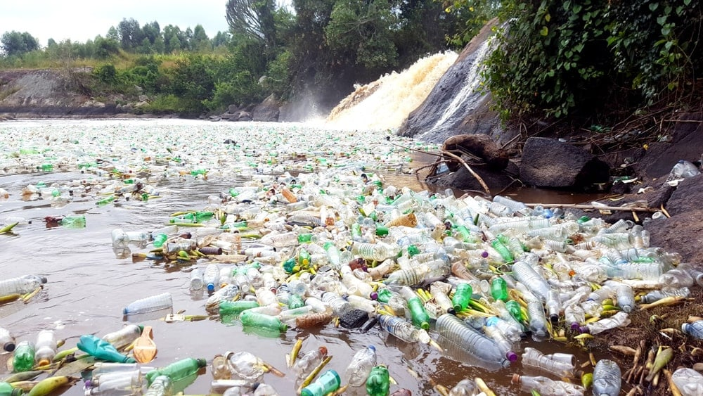
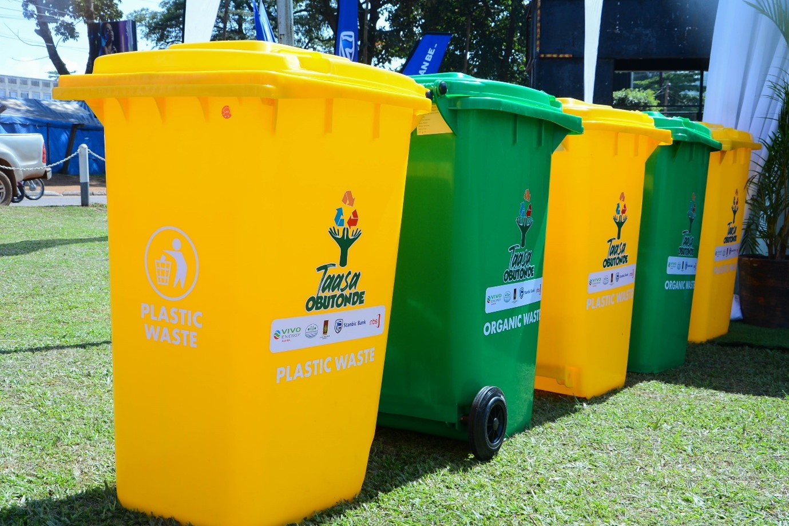

Transforming plastic waste into high-quality recycled yarn and artificial wool, for a sustainable tomorrow.
Uganda generates 600 tonnes of plastic waste daily, with only 6% being collected for recycling. This poses significant threats to our environment, waterways, and public health.
EcoSpin transforms plastic waste into high-quality recycled yarn and artificial wool, providing sustainable alternatives for the textile industry while reducing environmental pollution.
Tonnes of daily plastic waste
Current recycling rate
Global market by 2030
The global recycled textile market is projected to reach $6.87 billion by 2032, with a CAGR of 2.8%.